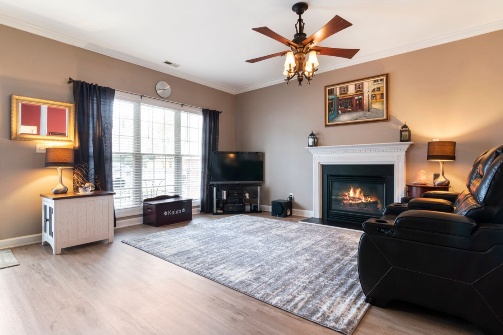

Professional Area Rug Cleaning
Area rugs collect daily dirt and dust differently than wall-to-wall carpet, so BluePeak Cleaning Co. checks fiber type, dye stability, and fringe condition before cleaning to keep colors and texture intact.

What's Included in Our Area Rug Cleaning Service
Here is exactly what happens when BluePeak Cleaning Co. handles your area rugs.
- ✓ Fiber and dye-stability check before any cleaning begins
- ✓ Deep dusting to remove embedded grit
- ✓ Spot treatment for stains and discoloration
- ✓ Gentle hand cleaning for fringe and delicate edges
- ✓ Cleaning method matched to wool, synthetic, or blended rugs
- ✓ Careful drying to prevent shrinkage or color bleed
The BluePeak Difference
What sets our area rugs service apart.
Fiber-Specific Care
Wool, synthetic, and blended rugs each respond differently to moisture and cleaning agents, and we adjust our process accordingly.
Dye-Bleed Testing
We test colorfastness before applying any solution so patterned and dyed rugs keep their original look.
Fringe & Edge Detailing
Fringe and bound edges get hand attention so they don't fray, mat, or discolor during cleaning.
Explore Our Other Services
BluePeak Cleaning Co. also offers the following services.
Have an area rug that needs a deep clean?
Call BluePeak Cleaning Co. today for a free estimate.